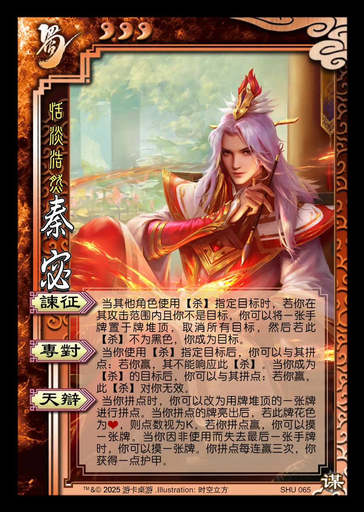

点击卡面查看大图
蜀
谋秦宓
♥3恬淡浩然
谏征
当其他角色使用【杀】指定目标时，若你在其攻击范围内且你不是目标，你可以将一张手牌置于牌堆顶，取消所有目标，然后若此【杀】不为黑色，你成为目标。
专对
当你使用【杀】指定目标后，你可以与其拼点：若你赢，其不能响应此【杀】。当你成为【杀】的目标后，你可以与其拼点：若你赢，此【杀】对你无效。
天辩
当你拼点时，你可以改为用牌堆顶的一张牌进行拼点。当你拼点的牌亮出后，若此牌花色为♥，则点数视为K。若你拼点赢，你可以摸一张牌。当你因非使用而失去最后一张手牌时，你可以摸一张牌。你拼点每连赢三次，你获得一点护甲。